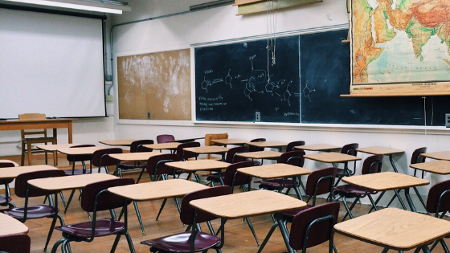

SDG yang ke-4 ini merupakan salah satu dasar untuk beberapa SDGs lainnya, jadi tentunya sangat penting. Tujuan ini dibuat untuk memastikan bahwa semua orang di dunia ini mendapatkan akses terhadap pendidikan berkualitas, inklusif, dan merata. Sayangnya, dunia ini sekarang sedang sangat tertinggal dalam mencapai pendidikan yang berkualitas dan merata. Hanya 58% dari pelajar seluruh dunia mencapai tingkat kemahiran minimal dalam bidang literasi saat akhir sekolah dasar (2019). Sebagian besar negara-negara di dunia ini bahkan menghasilkan kemunduran dalam hasil pendidikan di jenjang SD. Selain itu, peningkatan di jenjang SMP mulai melambat sejak 2015. Ada pula masalah lainnya seperti kekurangan guru dan kurangnya pelatihan profesional untuk para guru. Selain itu, pandemi COVID-19 juga menyebabkan banyak kekurangan dalam bidang pendidikan di beberapa negara. Tingkat penyelesaian jenjang SD dan SMP naik, tetapi dengan sangat lambat dan tidak stabil.
SDG4 ini harus sangat diupayakan dan diprioritaskan, karena memiliki pengaruh yang cukup besar untuk keseluruhan Agenda 2030 SDGs ini dan untuk kebaikan dunia ini. SDG4 ini sangat relevan dengan isu-isu global yang ada saat ini, seperti kemiskinan, ketidaksetaraan, dan ketidakadilan gender. Pendidikan yang berkualitas adalah kunci untuk mengangkat masyarakat dari kemiskinan dan mendorong pembangunan berkelanjutan. Pendidikan yang berkualitas dapat membuat individu-individu yang berkualitas, baik laki-laki maupun perempuan, baik di kota maupun di desa. Oleh karena itu, dengan meningkatkan kualitas pendidikan dan aksesibilitas pendidikan, masyarakat dapat memperoleh keterampilan dan pengetahuan yang diperlukan untuk menghadapi tantangan global dan perkembangan di dunia ini yang cepat.
Target 4.1, yaitu pendidikan dasar dan menengah yang gratis. Target ini menjamin pada tahun 2030, semua anak, baik perempuan maupun laki-laki, dapat menyelesaikan pendidikan dasar dan menengah tanpa dikenakan biaya. Pendidikannya bersifat setara, berkualitas, dan yang mengarah pada capaian pembelajaran yang relevan dan efektif; intinya, berkualitas.
Target 4.2, yaitu akses yang sama terhadap pendidikan anak usia dini yang berkualitas. Target ini menjamin bahwa pada tahun 2030, semua anak memiliki akses terhadap perkembangan dan pengasuhan anak usia dini, pengasuhan, dan pendidikan pra-SD yang berkualitas.
Target 4.3, yaitu akses yang sama ke pendidikan teknis, kejuruan, dan pendidikan tinggi. Target ini menjamin bahwa di tahun 2030, akan ada akses yang sama dan setara bagi semua perempuan dan laki-laki terhadap pendidikan teknik, kejuruan tinggi, salah satunya universitas. Tentunya juga yang terjangkau dan berkualitas.
Target 4.4, yaitu meningkatkan jumlah orang dengan keterampilan yang relevan untuk kesuksesan finansial. Hal ini menjamin bahwa pada tahun 2030, jumlah orang yang memiliki keterampilan yang relevan contohnya seperti teknik dan kejuruan, untuk pekerjaan (pekerjaan yang layak dan kewirausahaan) akan meningkat secara signifikan.
Target 4.5 yaitu menghilangkan semua diskriminasi dalam pendidikan. Target ini menyatakan bahwa pada tahun 2030, akan terjamin akses yang sama untuk semua tingkat pendidikan dan untuk seluruh masyarakat termasuk penyandang disabilitas, anak-anak kondisi rentan, dll.
Target 4.6 yaitu literasi dan numerasi universal. Target ini menjamin pada tahun 2030 semua remaja dan proporsi kelompok dewasa tertentu akan memiliki kemampuan literasi dan numerasi.
Target 4.7 yaitu pendidikan untuk pembangunan berkelanjutan dan kewarganegaraan global. Tujuan ini menjamin bahwa pada tahun 2030, semua peserta didik memperoleh pengetahuan dan keterampilan yang diperlukan untuk semakin mengingkatkan pembangunan perkelanjutan. Antara lain melalui pendidikan untuk pembangunan berkelanjutan dan gaya hidup yang berkelanjutan, hak asasi manusia, kesetaraan gender, promosi budaya damai dan non kekerasan, kewarganegaraan global dan penghargaan terhadap keanekaragaman budaya dan kontribusi budaya terhadap pembangunan berkelanjutan.
Target 4A yaitu membangun dan meningkatkan sekolah inklusif dan aman. Melalui peningkatan fasilitas pendidikan yang ramah anak, ramah penyandang cacat dan gender, dan menyediakan lingkungan belajar yang aman, anti kekerasan, inklusif, dan efektif bagi semua orang.
Target 4B, yaitu memperluas beasiswa pendidikan tinggi untuk negara-negara berkembang, dengan signifikan dan global. Hal ini terutama untuk negara-negara kurang berkembang, negara berkembang pulau kecil, dan negara-negara Afrika.
Target 4C, yaitu meningkatkan pasokan guru yang berkualitas di negara-negara berkembang secara signifikan. Hal ini juga bisa didukung melalui kerjasama internasional dalam pelatihan guru di negara berkembang, terutama negara kurang berkembang dan negara berkembang kepulauan kecil.
Tingkat penyelesaian pendidikan jenjang SD dan SMP sudah meningkat sejak 2015. Namun, peningkatan ini
bersifat lambat dan tidak berarti hasilnya positif dan berkualitas. Antara 2018 dan 2022, berdasarkan hasil
pendidikan di akhir pendidikan SMP, tingkat numerasi dan literasi turun; salah satu alasannya karena
COVID-19. Ada pula alasan lainnya yang mempengaruhi sistem pendidikan negara-negara berpenghasilan
rendah-menengah.

Dari tahun 2015 sampai 2023, di 76 negara berpenghasilan rendah-menengah, terdapat 2 dari 3 anak kecil sudah berkembang sesuai jalur dan harapan. Namun, pastinya tidak semua karena ada variasi di antara negara-negara.
Hanya setengah dari sekolah-sekolah dasar memiliki fasilitas yang memadai untuk menciptakan pengalaman dan
fasilitas sekolah yang berkualitas untuk siswa dan siswi disabilitas. Di tahun 2022, sebanyak 44% sekolah
dasar, 56% sekolah menengah, dan 69% sekolah menengah atas yang memiliki akses ke internet. Hal ini
merupakan perkembangan, karena ini hampir 2 kali lipatnya pada tahun 2021. Terdapat juga 91% sekolah
menengah atas yang memiliki akses listrik dan 81% memiliki fasilitas / akses kepada komputer.
